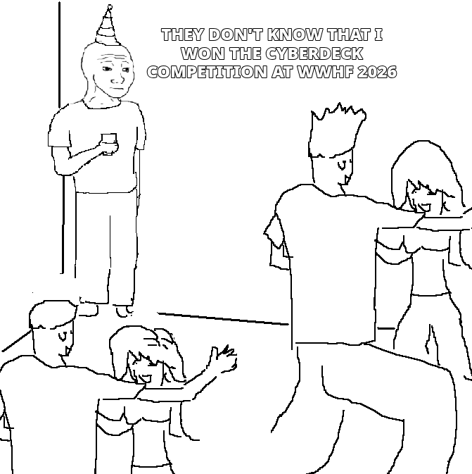

2026-10-14
I went to WWHF this year and had a blast. My team consisting of four of seven NoCo Hackers members in attendance was in 2nd place in the CTF at the end of the first night, after a bit of a roller coaster we ended up in 6th (technically in a four way tie for third, but there was also a two way tie for second). In addition to this success, I won the cyber deck competition!
